Guía de cobertura para Adrián: tres videos, un carrusel de fotos por día y tomas horizontales todo el tiempo. Cada pieza tiene su referencia incrustada, el desglose toma por toma y la hora de entrega.
Hoy viernes pasa el primer auto por el Super Prime (TC1). El video 1 tiene que estar publicado antes. Por eso es lo primero que se graba y se edita.
Horarios de la carrera según el arte oficial que publicó Diego. En amarillo, las horas a las que Adrián entrega cada pieza a Daniel; Daniel pone textos, logos y gráficos y publica.
| Hora | Qué pasa |
|---|---|
| Viernes 20 de noviembre | |
| Mañana | Grabar el video 1 en el parque de asistencia y empezar las horizontales. |
| 12:45 | Entrega video 1 · Super Prime (sin textos). |
| 13:30 | Daniel publica el video 1. |
| 14:27 | TC1 Super Prime · Vinchoa (vía Pircapamba) – Las Cochas · 10,95 km. |
| Tarde | Fotos del Super Prime y tomas para el video 2. Si se puede, grabar la frase de Diego y el golpe a cámara como respaldo. |
| 19:00 | Entrega fotos día 1 (10–15 fotos). |
| Sábado 21 de noviembre | |
| 07:00 | Saludos, ambiente y frase de Diego para el video 2. |
| 09:00 | Entrega video 2 · Día de carrera. |
| 09:45 | Daniel publica el video 2. |
| 10:26 | TC2 · Vinchoa – Quindigua · 28,8 km |
| 11:52 | TC3 · Vinchoa – Quindigua · 28,8 km |
| 13:39 | TC4 · Guanujo (Atandahua) – Julio Moreno · 11,5 km |
| 14:41 | TC5 · Guanujo (Atandahua) – Julio Moreno · 11,5 km |
| Final | Llegada, celebración, podio y premiación: tomas del video 3 en cámara lenta. |
| 2 h después del podio | Entrega fotos día 2 y video 3 · Cierre. |
| Dom 22 · 12:00 | Entrega de crudos: todas las horizontales y el material completo, para el video resumen. |
Las horas son del primer auto. Diego pasa unos minutos después según su orden de largada. Confirmar en el parque de asistencia la hora de la premiación.
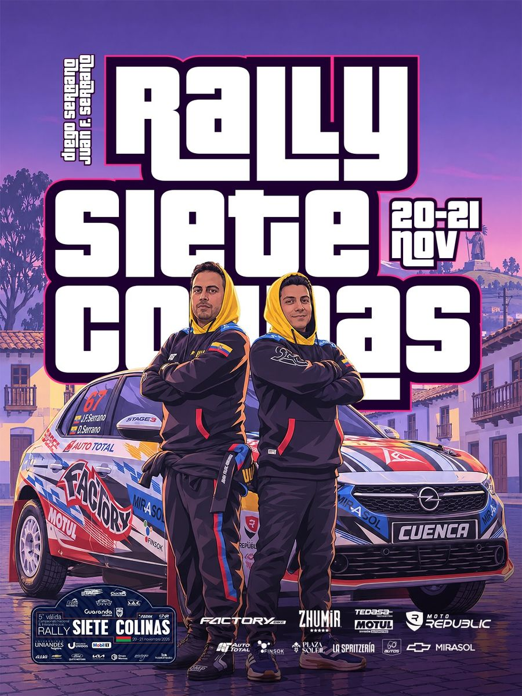
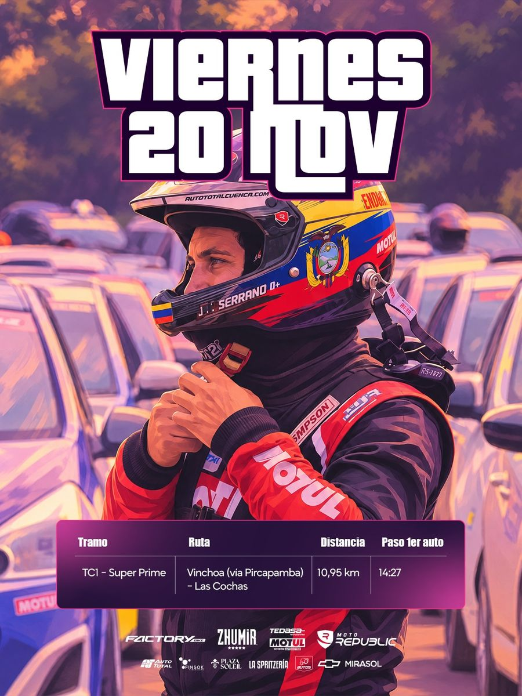
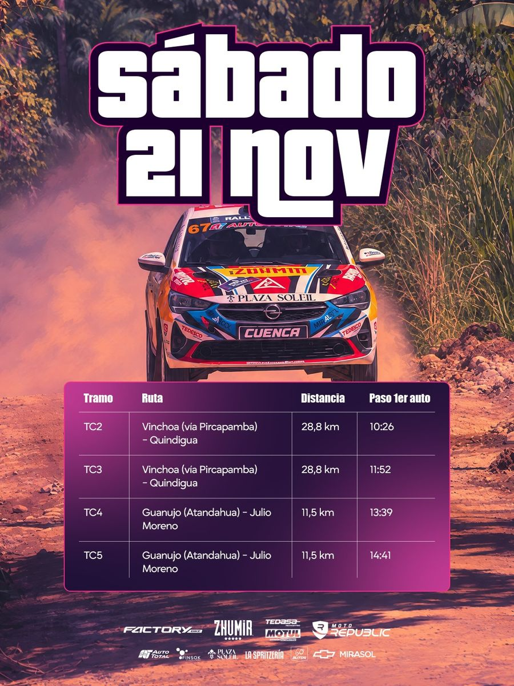
Arte oficial publicado por Diego el 20 de noviembre. Ver en Instagram ↗
Mismo audio y misma lógica que la referencia: cámara en mano pegada al auto, ángulos extremos, barridos rápidos y ráfagas de detalles. Termina en un plano fijo donde Daniel pone el texto "SUPER PRIME", como el "QUALI" de la referencia. No hay voz ni explicación.
Gran angular a 10–20 cm de la carrocería, girando la cámara alrededor del logo mientras avanzas. Que el logo llene el cuadro.
Entra con un barrido rápido desenfocado. Cámara casi en el piso, de abajo hacia arriba, recorriendo el lateral del auto.
"D. Serrano" en la ventana, la bandera de Ecuador o el #67. Movimiento rápido y desenfoque de movimiento.
Desde arriba, por la puerta o el techo, gran angular: la mano en la jaula, se sienta, casco, HANS, cinturones. Es el plano humano del video: no lo cortes antes de tiempo.
Súbete a una escalera, al balde de la camioneta o a algo alto. Toma cenital o picada del Opel con el piso del parque.
Número 67, logo Zhumir, Tedasa, rin, guante, casco. Graba cada uno 2 o 3 segundos; en la edición usas solo un pedacito de cada uno, al ritmo del golpe del audio.
Ángulo bajo, cámara en mano rápida, pegada a la llanta y a las manos.
Contrapicado desde el piso, frente del Opel con mecánicos alrededor. Deja espacio libre en el centro para que Daniel ponga "SUPER PRIME". Mantén la cámara quieta los 3,5 segundos completos.
Estilo detrás de cámaras, como la referencia de Le Mans: saludos, cámara inestable sin problema, muchas perspectivas y el auto en la pista del Super Prime de ayer. Se usa el mismo audio, pero sin las voces en inglés. Adrián entrega el video montado; Daniel pone textos, logos y gráficos.
Como en el segundo 0,3 de la referencia: Diego con el casco puesto se acerca al lente, mira a cámara y le da un golpe con el guante. Corta justo en el golpe; ahí Daniel pone el texto emergente. Gran angular a la altura del pecho. Haz 3 o 4 intentos y protege el lente con un filtro.
Diego saludando a alguien (apretón, abrazo, choque de manos), el copiloto, mecánicos, aficionados. Cámara en mano, inestable sin problema, muy cerca.
Las colinas, la iglesia, calles con gente, el cielo. Uno o dos planos generales para ubicar el lugar.
Diego apoyado o sentado junto al Opel, detalle del casco dentro de la cabina, manos con guantes, herramientas, mecánicos.
Lo mejor del TC1: plano general del auto pasando, paso rápido cerca de la cámara, polvo, curva, onboard si existe.
"Hoy es día de carrera, última carrera del año, vamos con todo."
Una sola frase, sin explicar nada más. Diego sin casco o con el casco abierto, cerca, mirando al lente. Audio limpio con micrófono. Graba 4 o 5 intentos y elige el que tenga más energía.
Juan Felipe con la hoja de ruta, revisión técnica, abrazos, gente esperando en la ruta, la rampa o el control de salida.
Como el final de la referencia: paneo lento sobre la decoración (Motul, Zhumir, Cuenca) y el Opel arrancando hacia el tramo.
De la referencia se toma solo el audio ("Love Me"), no su dinámica. Es un audio suave: aquí Adrián saca su mejor nivel cinematográfico. Momentos intensos y reales en cámara lenta. Es el video para decir "campeones del Nacional de Rally".
Mecánicos y familia saltando, gritando, corriendo al auto. Diego saliendo de la cabina y abrazando a Juan Felipe.
El paso al escalón, el trofeo en alto, la champaña. Desde abajo (contrapicado) y de perfil, con el cielo o la gente detrás.
Diego agachado junto a un niño, firmando, tomándose una selfie. Busca la sonrisa del niño, no solo la de Diego.
Familia, auspiciantes, otros pilotos felicitándolo. Planos cerrados de manos y caras.
Barro en la carrocería, el casco sobre el techo, el trofeo sobre el capó, la bandera de Ecuador.
Diego y el equipo con el trofeo y el auto, en contraluz si hay sol. Deja aire arriba para el texto "CAMPEONES".
Referencia: el carrusel de la final de circuitos en Ambato. Vertical 3:4, de 10 a 15 fotos por día. Cada tipo de foto tiene su número; la 6 es la favorita de Daniel: la marca como protagonista, enmarcada por algo en primer plano.
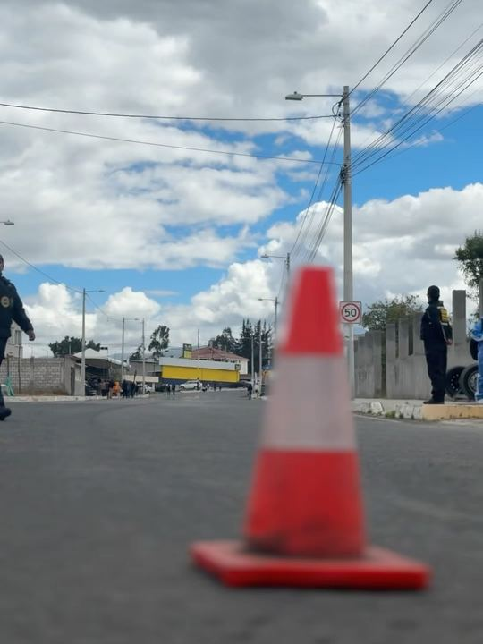
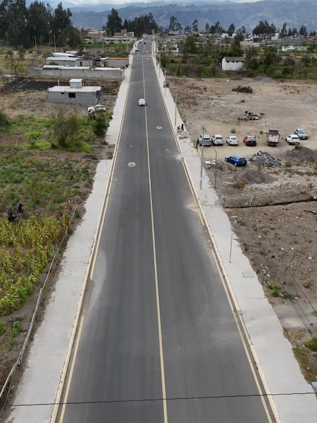
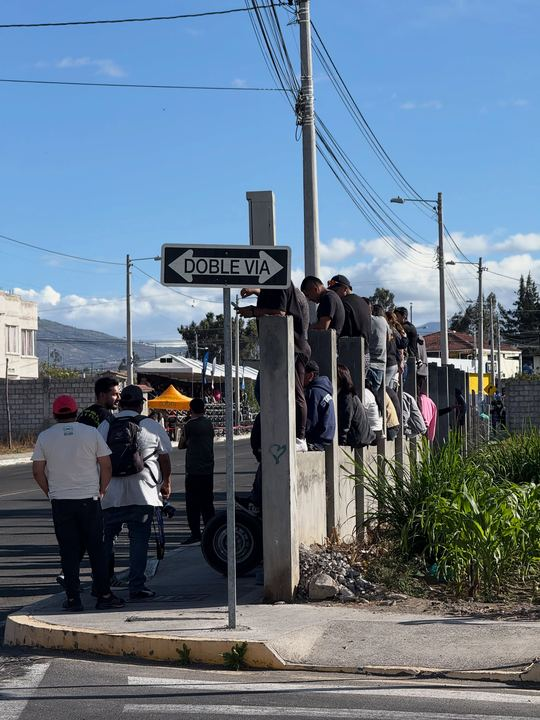
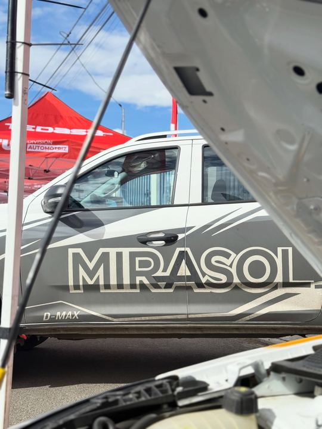
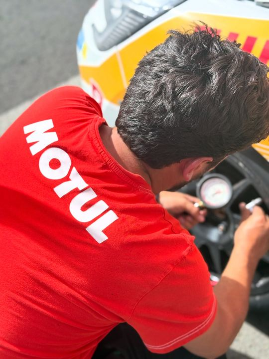
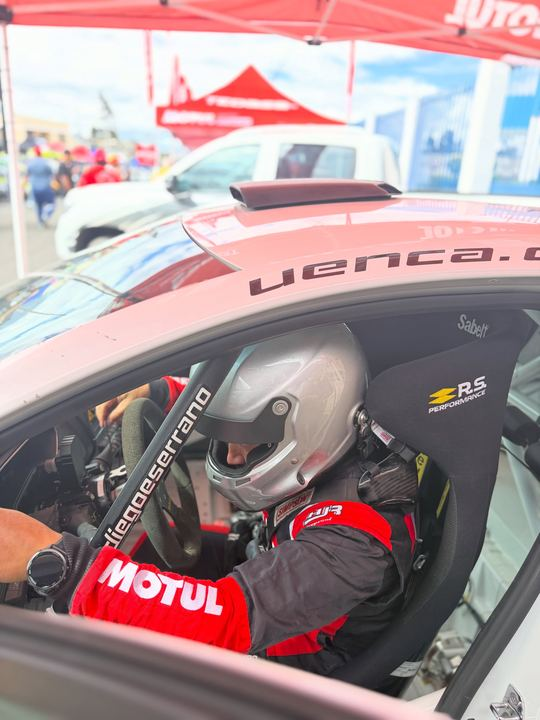
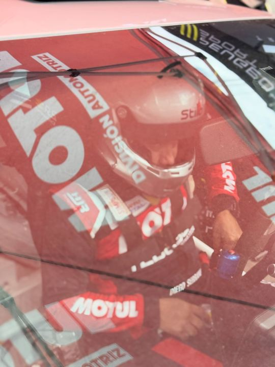
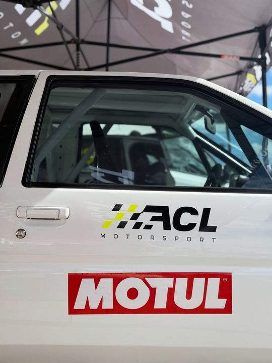
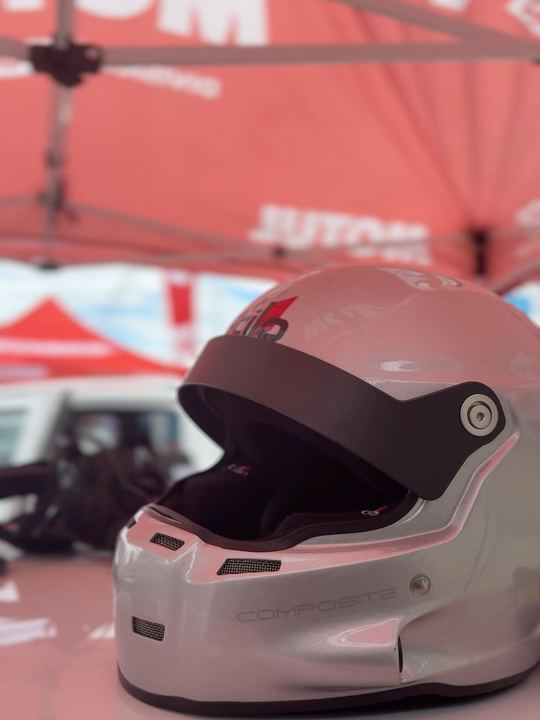
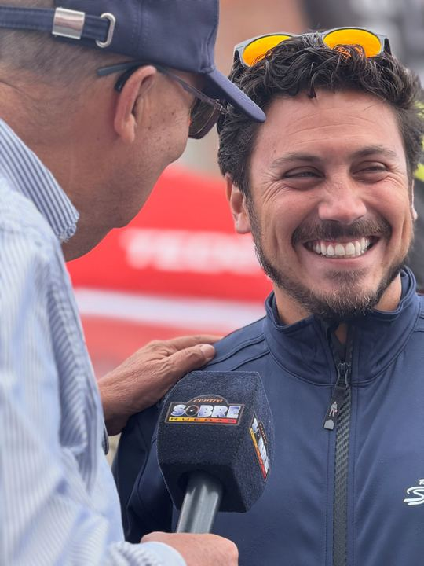
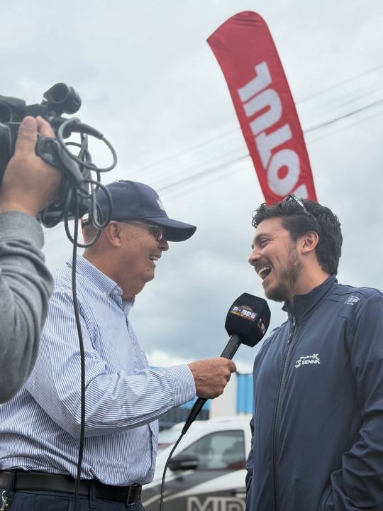
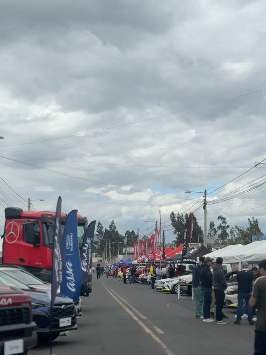
Con este material se hace el video resumen de la fecha. En cada lugar y en cada momento, además de las fotos y los verticales, Adrián graba 2 o 3 tomas horizontales fijas de 8 a 15 segundos: la cámara quieta y la acción pasando dentro del cuadro. Referencia: el carrusel del día de carrera en Ambato.
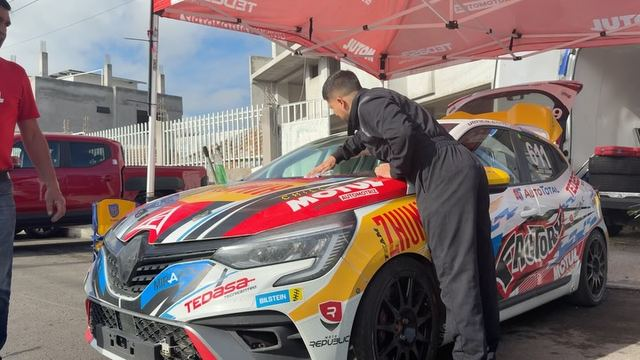
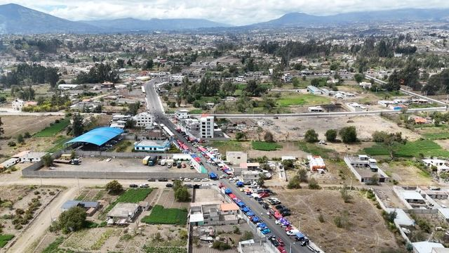
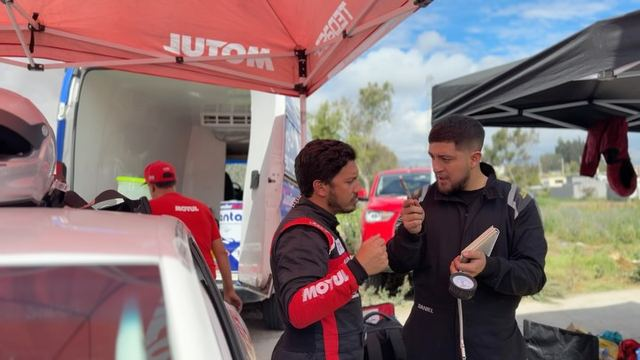
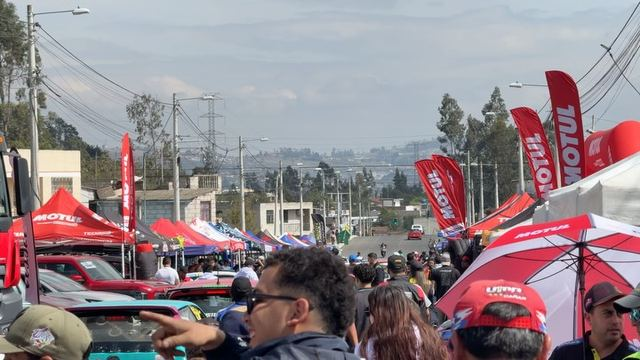
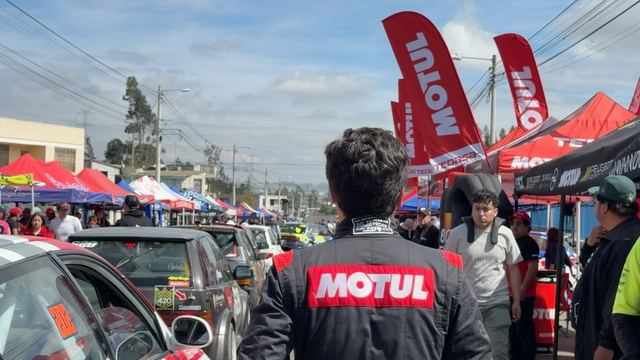
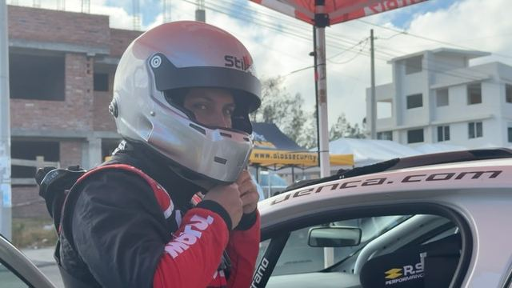
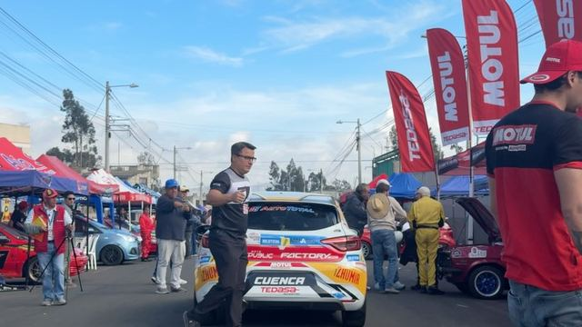
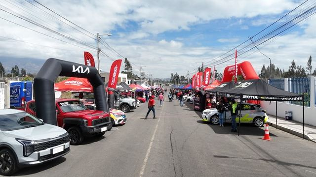
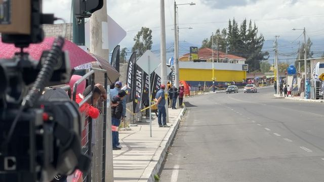
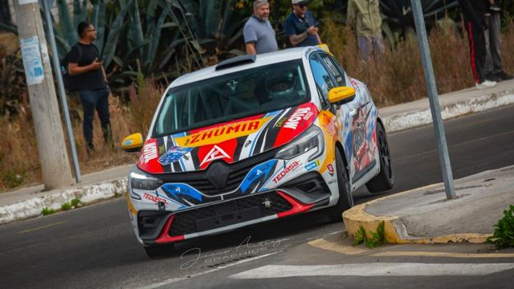
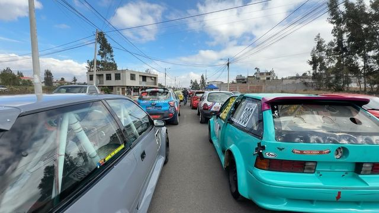
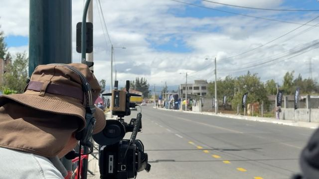
Adrián: revisa estas piezas antes y durante la cobertura. Sirven para repetir las perspectivas que ya funcionaron o para buscar un ángulo distinto del mismo momento, sin copiar exacto lo que ya se publicó.
Perfil completo: @diegoeserrano ↗
Marcas que tienen que verse en fotos y videos
Para mandárselo a Adrián por WhatsApp junto con el enlace de esta página.